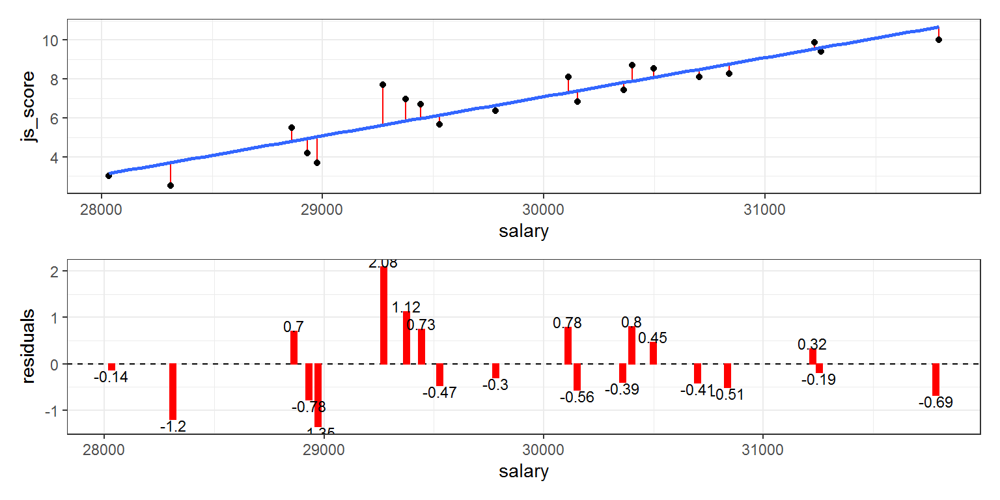

Introduction
The goal this tutorial is to provide a simple introduction to hypothesis testing with linear regression models for beginner. In the context of this tutorial non-linear model will not be presented. This introduction is also limited to the most common linear regressions models which suppose a Gaussian distribution of the residuals and which does not include random effects.
We are going to use models to partition data into patterns and residuals. Strong patterns will hide subtler trends, so we’ll use models to help peel back layers of structure as we explore a dataset.
Tidyverse framework
Let’s load all the packages needed for this tutorial (this assumes you’ve already installed them). Loading the {tidyverse} package by running library(tidyverse) loads the following commonly used data science packages all at once:
- {ggplot2} for data visualization
- {dplyr} for data wrangling
- {tidyr} for converting data to “tidy” format
- {readr} for importing spreadsheet data into R
- As well as the more advanced {purrr}, {tibble}, {stringr}, and {forcats} packages
References
Once again, this tutorial uses contents and examples from the following free online books. They are perfect for beginners, feel free to check them out for further information:
- R for Data Science by Wickham and Grolemund (2017)
- YaRrr! The Pirate’s Guide to R by Phillips (2018)
- A ModernDive into R and the tidyverse by Ismay and Kim (2019)
- Learning statistics with R by Navarro (2019)
- Getting Used to R, RStudio, and R Markdown by Kennedy (2019)
- Introduction to Open Data Science by the Ocean Health Index Team (2019)
- Statistical Thinking for the 21st Century by Poldrack (2020)
Chapter 1: Hypothesis testing
Why hypotheses?
If they are expert in their field, why don’t scientists just use common sense? The best answer is a really simple one: we can’t trust them. Scientists can’t solve deductive problems (ones where no guessing is required such as hypothesizing after the results are known) without being influenced by pre-existing biases.
Instead, scientific reasoning requires to engage in induction, making wise guesses and going beyond the immediate evidence of the senses to make generalisations about the world. Therefore, much of statistics is basically a safeguard.
Inductive research is the process of formulating hypotheses a priori from theories and to test them against the data. Every hypothesis, called \(H_{A}\) has to state a difference (between groups or according values) and every hypothesis has a null hypothesis counterpart (no difference between groups or according values) also called \(H_{0}\).
A hypothesis test consists of a test between two competing hypotheses:
A null hypothesis \(H_{0}\) (pronounced “H-naught”) versus
An alternative hypothesis \(H_{A}\) (also denoted \(H_{1}\))
Generally the null hypothesis is a claim that there is “no effect” or “no difference of interest”. In many cases, the null hypothesis represents the status quo or a situation that nothing interesting is happening. Furthermore, generally the alternative hypothesis is the claim the experimenter or researcher wants to establish or find evidence to support. It is viewed as a “challenger” hypothesis to the null hypothesis \(H_{0}\).
Testing hypotheses consists in evaluating the probability of having “the difference obtained in my sample” knowing that the null hypothesis is true in the real life.
Identifying variables in your hypotheses
In the context of this tutorial, any hypothesis formulate the prediction of the relationship between at least two variables. It’s important to identify the two roles “variables doing the explaining” and “variable being explained” distinct.
For each hypothesis, let’s denote the:
- “variable being explained” as Y (also called Dependent Variable (DV) or Outcome). This variable has to be unique and made of numeric values (i.e., continuous).
- “variables doing the explaining” as X, Z, … (also called Independent Variables (IV) or Predictors). An hypothesis contain only one variable if this hypothesis states a main effect and two or more variables if this hypothesis is an interaction. The variable(s) can be either made of character strings (i.e., categorical) or made of numeric values (i.e., continuous).
- \(\beta\) as the strength and the direction of the relationship between the “variables doing the explaining” and the “variable being explained”.
Main effect hypothesis
A main effect is the prediction of the link between one continuous Dependent Variable (“variable being explained”) and one Independent Variable (“variable doing the explaining”) that can be categorical or continuous.
The general formulation of the main effect hypothesis is:
The Independent Variable has a significant effect on the Dependent Variable.
Which can be translated by either:
- “the Dependent Variable is explained by the Independent Variable”
- “the Independent Variable is explaining the Dependent Variable”
- “the Independent Variable influences the Dependent Variable”
- “there is a link/relationship between the Independent Variable and the Dependent Variable”
These hypotheses formulations are generic. They have to be adapted within each case study and to be detailed to indicate the direction of the effect/explaining/influence/link/relationship.
Model with one main effect
The relation between one Independent Variable (X) and one Dependent Variable (Y) is represented as follow and can be read as “X has a main effect on Y”:
Model with multiple main effects
Multiple main effect hypotheses can be tested in the same and unique model. For example, the following model tests 2 main effect hypotheses, “X has a main effect on Y” and “Z has a main effect on Y”:
Interaction effect hypothesis
An interaction effect is the prediction of the relation between one continuous Dependent Variable (“variable being explained”) and two or more Independent Variables (“variables doing the explaining”) that can be either categorical or continuous.
The general formulation of an interaction effect hypothesis with 2 Independent Variables is:
The effect of the Independent Variable 1 on the Dependent Variable changes according to the values of the Independent Variable 2.
The relation between two Independent Variables (X and Z) and one Dependent Variable (Y) is represented as follow:
The second arrow from the variable Z crossing the first arrow from the variable X to the variable Y indicates that the model has in fact 3 effects and is similar as:
Both models can be read as:
- “X have a main effect on Y”
- “Z have a main effect on Y”
- “X and Z have an interaction effect on Y”
Evaluation of the effect significance
One all the hypotheses are formulated, it is time to test all of them in one unique model. In this model, a value called \(\beta\) which is usually the coefficient of correlation is associated to each predictor from the hypotheses. Testing for the significance of the effect means evaluating if this \(\beta\) value is significantly different, higher or lower than 0 (no link between variables):
\[H_{A}: \beta \neq 0\] \[H_{0}: \beta = 0\]
To test the significance of the effects, only one statistical method will be used for all hypothesis type: Linear Regression. Specific tests are available for certain type of hypothesis such as T-test or ANOVA but as they are special case of Linear Regression, their importance is limited (see Jonas Kristoffer Lindeløv’s blog post: Common statistical tests are linear models).
Exercises
Chapter 2: Understanding regressions
A linear regression model tests the linear relationship between two variables, let’s say X and Y. Imagine the variable X as our Independent variable (or predictor) and the variable Y as our Dependent variable (or outcome). If X and Y are strongly related, the hypothesis that Y is influenced by X can be transcribed with the following equation:
\[Y = X\]
In reality this equation is a very special case of relationship in which the values of the variable X are exactly the same as the values of the variable Y. The equation \(Y = X\) involves that the variable Y is completely explained by the variable X.
| X | Y |
|---|---|
| 0 | 0 |
| 1 | 1 |
| 2 | 2 |
| 3 | 3 |
| 4 | 4 |
| 5 | 5 |
| 6 | 6 |
| 7 | 7 |
| 8 | 8 |
| 9 | 9 |
In the equation \(Y = X\), three coefficients are hidden because they are unused:
- the intercept coefficient \(\beta_{0}\) corresponds to the value of Y when X is 0, which is 0 in our case.
- the slope coefficient \(\beta_{1}\) corresponds to how much Y increase when X increase of 1, which is 1 in our case (e.g., when X is 3, Y is 1 x 3).
- the error coefficient \(\epsilon\) corresponds to how far from the prediction line the values of Y are, which is 0 in our case because all the values are aligned.
So in general, the relation between a predictor and an outcome can be written as: \[Y = \beta_{0} + \beta_{1}.X + \epsilon\]
which is in our case:
\[Y = 0 + 1 \times X + 0\]
Testing the hypothesis that the variable \(X\) has a significant influence on the variable \(Y\) means testing that slope coefficient \(\beta_{1}\) associated to \(X\) is significantly different than 0 (in our case is 1 significantly different than 0).
It’s important to understand that a fitted model is just the closest model from a family of models. That implies that you have the “best” model (according to some criteria); it doesn’t imply that you have a good model and it certainly doesn’t imply that the model is “true”. George Box puts this well in his famous aphorism:
All models are wrong, but some are useful.
Applied Example
Imagine the following case study: The CEO of the D&D company has problems with his employee well-being and wants to investigate the relationship between Job Satisfaction, Salary and Performance. Therefore the CEO formulate 3 hypotheses:
- the higher employees’ Salary is, the higher their Job Satisfaction (main effect)
- the higher employees’ Performance is, the higher their Job Satisfaction (main effect)
- the effect of Salary on Job Satisfaction is bigger for high Performance than for low Performance (interaction effect)
Let’s take a look at the our basic example with the D&D company. The dand data frame object contains two continuous variables, salary and js_score (job satisfaction score from 0 to 10) and one categorical variable perf (performance being either low or high).
First let’s inspect the structure of the dand data frame object with the str() function and display the 6 first values with the head() function:
str(`_ _ _`)
head(`_ _ _`)The business analyst at D&D is making the following hypothesis:
Because salary has an effect of employees’ job satisfaction, I predict that the higher salaries are the higher employees’ job satisfaction.
Let’s plot the variables salary and js_score from the dand data frame object to see how they are related:
ggplot(data = `_ _ _`) +
geom_point(mapping = aes(x = `_ _ _`, y = `_ _ _`))Let’s use a model to capture that pattern and make it explicit. It’s our job to supply the basic form of the model. In this case, the relationship looks linear, i.e. \(job\,satisfaction = \beta_{0} + \beta_{1}\,salary + \epsilon\).
The first and the most important question to answer is “How to find the line used for our analysis?”. The answer is simple: just draw all the possible lines on the frame! The best line, also called best fit, is the one which has the lowest amount or error.
Let’s start by getting a feel for what models from that family look like by randomly generating a few and overlaying them on the data.
There are 25 models on this plot, but a lot are really bad! We need to find the good models by making precise our intuition that a good model is “close” to the data. We need a way to quantify the distance between the data and a model. Then we can fit the model by finding the value of \(b_0\) and \(b_1\) that generate the model with the smallest distance from this data.
One easy place to start is to find the vertical distance between each point and the model, as in the following diagram. The following plot is interactive, on the hover you can see for each employee his/her actual salary and job satisfaction. You can also see the value of the prediction error, also called residual, which is the distance between the actual salary and the predicted salary (blue line).
This distance is just the difference between the y value given by the model (the prediction), and the actual y value in the data (the response). Here is a presentation of each residual error for each employee. Next, we need some way to compute an overall distance between the predicted and actual values. In other words, the plot above shows 20 distances: how do we collapse that into a single number?

One common way to do this in statistics to use the “root-mean-squared deviation” or RMSE. We compute the difference between actual and predicted, square them, average them, and the take the square root. This distance has lots of appealing mathematical properties, which we’re not going to talk about here. You’ll just have to take my word for it!
How to estimate linear regression’s coefficients?
As previously indicated, you will not have to calculate all the possible lines in your data to find the best fit, the lm() function will do it for you.
The lm() function has only two arguments that you should care about: formula and data.
formulais the formulation of the model tested which take the form of the outcome variable name followed by~and by predictor variables’ name separated by+.datais the name of the data frame object containing the variables.
1. Main effect test in R formulas
To test a main effect, the formula just need to include the name of the variable used as predictor:
outcome ~ predictor
If more than one main effect is expected, the model includes this additional predictors with the symbol +:
outcome ~ predictor1 + predictor2
2. Interaction effect test in R formulas
To test an interaction effect between two predictors (or more) on an outcome variable, the predictors have to be separated by the symbol : such as:
outcome ~ predictor1:predictor2
To test a full model (i.e which contains all possible main effects and all possible interaction effects), the predictors can be separated by the symbol *.
Here is a full model with 2 predictors and therefore 3 hypotheses (2 main effects and 1 interaction effect):
outcome ~ predictor1*predictor2which corresponds to …outcome ~ predictor1 + predictor2 + predictor1:predictor2
Here is a full model with 3 predictors and therefore 7 hypotheses (3 main effects and 4 interaction effects):
outcome ~ predictor1*predictor2*predictor3which corresponds to …outcome ~ predictor1 + predictor2 + predictor3 + predictor1:predictor2 + predictor1:predictor3 + predictor2:predictor3 + predictor1:predictor2:predictor3
Summary of formulas definitions
It is essential to understand that the formula of the model tested must includes all the effects corresponding to an explicit hypothesis and only the effects corresponding to an explicit hypothesis.
Main effect hypotheses are tested in the model formula just by adding the predictor variable names with +. Interaction effect hypotheses are tested in the model formula just by indicating the interacting predictor variable names with :.
Exercises
Chapter 3: Applying regressions
Let’s go back to our example using the dand dataset. Just to remind you, the dand dataset is made of 20 employees and for each of them we have the measure for the 3 following variables:
## 'data.frame': 20 obs. of 3 variables:
## $ perf : Factor w/ 2 levels "high","low": 2 2 2 1 2 1 1 1 2 2 ...
## $ salary : num 31224 30360 30401 30111 29444 ...
## $ js_score: num 9.87 7.42 8.7 8.1 6.71 ...Different analysts, different models
Imagine that 4 analysts have their own report to create:
- Analyst 1 predicts that job satisfaction is influenced by employee’s salary.
- Analyst 2 predicts that job satisfaction is influenced by employee’s performance.
- Analyst 3 predicts that job satisfaction is influenced by employee’s salary and that job satisfaction is also influenced by employee’s performance.
- Analyst 4 predicts that job satisfaction is influenced by employee’s salary, that job satisfaction is also influenced by employee’s performance, and that the influence of employee’s salary on job satisfaction is different according employee’s performance.
Analyst 1’s model
Analyst 1 predicts that job satisfaction is influenced by employee’s salary. More precisely, Analyst 1 predicts that job satisfaction will increase when employee’s salary is increasing (\(H_{A}\)).
This hypothesis can be translated as:
- \(H_{A}: \beta_{1} \neq 0\) (coefficient of correlation associated to salary is different than 0)
- \(H_{0}: \beta_{1} = 0\) (coefficient of correlation associated to salary equals 0)
In mathematical terms, Analyst 1’s model to test this hypothesis will be:
\[job\,satisfaction = \beta_{0} + \beta_{1}\,salary + \epsilon\]
To use test this hypothesis in a linear regression model, the Analyst 1 will use the lm() function as follow:
analyst_1_lm <- lm(formula = js_score ~ salary, data = dand)Analyst 2’s model
Analyst 2 predicts that job satisfaction is influenced by employee’s performance. More precisely, Analyst 2 predicts that job satisfaction for employees with high performance is higher than job satisfaction for employees with low performance (\(H_{A}\)).
This hypothesis can be translated as:
- \(H_{A}: \beta_{1} \neq 0\) (coefficient of correlation associated to performance is different than 0)
- \(H_{0}: \beta_{1} = 0\) (coefficient of correlation associated to performance equals 0)
In mathematical terms, Analyst 2’s model to test this hypothesis will be:
\[job\,satisfaction = \beta_{0} + \beta_{1}\,performance + \epsilon\]
to use test this hypothesis in a linear regression model, the Analyst 2 will use the lm() function as follow:
analyst_2_lm <- lm(formula = js_score ~ perf, data = dand)In the case of a linear regression involving a categorical variable with 2 modalities as predictor, the best regression line is exactly the one passing through the average of the 2 modalities. For this reason, if the slope of this line is 0 (i.e., horizontal line), these means are identical and no difference can be observed between the two groups. At the contrary, if the slope is different than 0 (i.e., oblique line), these means are not identical and the groups can be considered as different. The t-test usually used in this case is a special case of the linear regression.
Because, the linear regression method is based on the t-test, categorical variable are processed by comparing all modalities with a reference modality (default behaviour). Therefore, to obtain the overall effect of a categorical variable with 3 or more modalities, an additional function should be used to summarise the 2-by-2 comparisons and thus obtaining a p-value for the overall variable that will be used to test the hypothesis involving this variable.
Analyst 3’s model
Analyst 3 predicts that job satisfaction is influenced by employee’s salary. More precisely, Analyst 3 predicts that job satisfaction will increase when employee’s salary is increasing (\(H_{A_{1}}\)).
This hypothesis can be translated as:
- \(H_{A_{1}}: \beta_{1} \neq 0\) (coefficient of correlation associated to salary is different than 0)
- \(H_{0_{1}}: \beta_{1} = 0\) (coefficient of correlation associated to salary equals 0)
Analyst 3 also predicts that job satisfaction is influenced by employee’s performance. More precisely, Analyst 3 predicts that job satisfaction for employees with high performance is higher than job satisfaction for employees with low performance (\(H_{A_{2}}\)).
This hypothesis can be translated as:
- \(H_{A_{2}}: \beta_{2} \neq 0\) (coefficient of correlation associated to performance is different than 0)
- \(H_{0_{2}}: \beta_{2} = 0\) (coefficient of correlation associated to performance equals 0)
In mathematical terms, Analyst 3’s model to test these hypotheses will be:
\[job\,satisfaction = \beta_{0} + \beta_{1}\,salary + \beta_{2}\,performance + \epsilon\]
to use test this hypothesis in a linear regression model, the Analyst 3 will use the lm() function as follow:
analyst_3_lm <- lm(formula = js_score ~ salary + perf, data = dand)Analyst 4’s model
Analyst 4 predicts that job satisfaction is influenced by employee’s salary. More precisely, Analyst 4 predicts that job satisfaction will increase when employee’s salary is increasing (\(H_{A_{1}}\)).
This hypothesis can be translated as:
- \(H_{A_{1}}: \beta_{1} \neq 0\) (coefficient of correlation associated to salary is different than 0)
- \(H_{0_{1}}: \beta_{1} = 0\) (coefficient of correlation associated to salary equals 0)
Analyst 4 also predicts that job satisfaction is influenced by employee’s performance. More precisely, Analyst 4 predicts that job satisfaction for employees with high performance is higher than job satisfaction for employees with low performance (\(H_{A_{2}}\)).
This hypothesis can be translated as:
- \(H_{A_{2}}: \beta_{2} \neq 0\) (coefficient of correlation associated to performance is different than 0)
- \(H_{0_{2}}: \beta_{2} = 0\) (coefficient of correlation associated to performance equals 0)
Finally, Analyst 4 predicts that the effect of salary on job satisfaction will be different according to employee’s performance. More precisely, Analyst 4 predicts that for employees with high performance, job satisfaction will increase when employee’s salary is increasing. However, for employees with low performance, job satisfaction will decrease when employee’s salary is increasing (\(H_{A_{3}}\)).
This hypothesis can be translated as:
- \(H_{A_{3}}: \beta_{3} \neq 0\) (coefficient of correlation associated to the interaction between salary and performance is different than 0)
- \(H_{0_{3}}: \beta_{3} = 0\) (coefficient of correlation associated to the interaction between salary and performance equals 0)
In mathematical terms, Analyst 3’s model to test these hypotheses will be:
\[job\,satisfaction = \beta_{0} + \beta_{1}\,salary + \beta_{2}\,performance + \beta_{3}\,salary \times performance + \epsilon\]
to use test this hypothesis in a linear regression model, the Analyst 4 will use the lm() function as follow:
analyst_4_lm <- lm(formula = js_score ~ salary + perf + salary:perf, data = dand)Exercises
Chapter 4: Reading regressions
Now R has calculated the model, the hardest part of analysis is done. Indeed the most important is to test THE model which corresponds to all your hypotheses. Now, the trick is to learn about the mean of the vocabulary used in linear regression’s output to understand their results.
Vocabulary
Here many concepts and letters will be introduced in a short presentation here but I encourage you to read more about them in the references presented in the introduction section.
\(R\) and \(R^2\)
\(R\) the overall correlation of your model and \(R^2\) is the % of variance of the variable X explained by the model. The following visualisation presents the relationship between correlation and variance explained.
Note: \(R\) denote the overall correlation while all the predictors are taken into account whereas \(r\) is the correlation associated to only one predictor.
Estimates, Standardized estimates and associated Standard Errors
Estimates indicate the value of \(b\) which is the raw (non-standardized version of \(\beta\)). For the intercept, the estimate corresponds to the value of the outcome variable when the predictor variable is null. For a predictor variable, the estimate corresponds to how much the outcome variable when this predictor increase by one.
In the case of multiple predictors with different units/scales/ranges, the estimate being calculated according the unit/scale/range of each predictor, can not been compared between the predictors. To compare the strength of the link between each predictor and the outcome variable, standardized estimates are necessary. This standardised estimates also known as \(\beta\) are also the correlation \(r\) for each predictor with the outcome variable.
Because the best fit of the model is calculated on a pool of multiple best fit attempts, a confidence margin also know as SE for standard error can be provided.
Statistical tests
Hypothesis testing on linear regression models is built on the “Student t-test” statistic or \(t\) value, which aims to compare groups two by two. In order to test the hypothesis of a variable involving three or more groups, an addition statistic called “Fisher F-test” and using the letter \(F\) is required.
p-value and degree of freedom
The p-value is the most important value because it will be used to take a decision on whether to accept or to reject \(H_{0}\) (and consequently to consider \(H_{A}\) as potentially true). According Fisher, the p-value is the probability that we would have observed a test statistic that is at least as extreme as the one we actually did get if the null hypothesis is true. In other words, if the data are extremely implausible according to the null hypothesis, then the null hypothesis is probably wrong.
The p-value is a probability ranging from 0% to 100% and the threshold to say that the data obtained are extremely implausible is 5% (or 0.05 in a p-value scale). Every results obtained with a p-value lower than 5% or 0.05 is considered as implausible if the null hypothesis is true, and lead to the rejection of this null hypothesis.
The degrees of freedom (df) corresponds to the number of unique “data points” that contribute to a particular calculation, minus the number of “constraints” that they need to satisfy. Running a statistical model will remove all the freedom to preform new analyses with different models. For this reason, all the hypotheses should be tested once, and only once, in the same unique model.
R outputs
The base R function (i.e., built-in) to display linear regression’s results, including estimates for each of the beta values, is the summary() function:
my_data_frame <- data.frame(
outcome = rnorm(10),
predictor1 = rnorm(10),
predictor2 = rnorm(10)
)
linear_model <- lm(formula = outcome ~ predictor1 * predictor2, data = my_data_frame)
summary(linear_model)The output that this command produces is pretty dense, but we’ve already discussed everything of interest in it, so what I’ll do is go through it line by line. The first line reminds us of what the actual regression model is:
Call:
lm(formula = outcome ~ predictor1 * predictor2, data = my_data_frame)You can see why this is handy, since it was a little while back when we actually created the summary_model model, and so it’s nice to be reminded of what it was we were doing. The next part provides a quick summary of the residuals (i.e., the \(\epsilon\) values),
Residuals:
Min 1Q Median 3Q Max
-0.60737 -0.36877 -0.05916 0.20591 0.83849which can be convenient as a quick check that the model is okay. Linear regression assumes that these residuals were normally distributed, with mean 0. In particular it’s worth quickly checking to see if the median is close to zero, and to see if the first quartile is about the same size as the third quartile. If they look badly off, there’s a good chance that the assumptions of regression are violated.
The next part of the R output looks at the coefficients of the regression model:
Coefficients:
Estimate Std. Error t value Pr(>|t|)
(Intercept) -0.2951 0.1911 -1.544 0.1735
predictor1 -0.2958 0.2152 -1.374 0.2185
predictor2 0.1344 0.1680 0.800 0.4540
predictor1:predictor2 0.4993 0.1764 2.831 0.0299 *
---
Signif. codes: 0 ‘***’ 0.001 ‘**’ 0.01 ‘*’ 0.05 ‘.’ 0.1 ‘ ’ 1Each row in this table refers to one of the coefficients in the regression model. The first row is the intercept term, and the later ones look at each of the predictors. The columns give you all of the relevant information. The first column is the actual estimate of b (e.g., -0.2951 for the intercept, and -0.2958 for the predictor1). The second column is the standard error estimate (SE). The third column gives you the t-statistic. Finally, the fourth column gives you the actual p value for each of these tests. The only thing that the table itself doesn’t list is the degrees of freedom used in the t-test, which is always N−K−1 and is listed immediately below, in this line:
Residual standard error: 0.575 on 6 degrees of freedomThe value of df=6 is equal to N−K−1, so that’s what we use for our t-tests. In the final part of the output we have the F-test and the \(R^{2}\) values which assess the performance of the model as a whole
Multiple R-squared: 0.6977, Adjusted R-squared: 0.5465
F-statistic: 4.615 on 3 and 6 DF, p-value: 0.05313So in this case, the model did not perform significantly better than you’d expect by chance (\(F(3,6) = 4.615, p = 0.053\)), which isn’t all that surprising: the \(R^{2} = 0.6977\) value indicate that the regression model accounts for 69.7% of the variability in the outcome measure. However, when we look back up at the t-tests for each of the individual coefficients, we have pretty strong evidence that the predictor1 and predictor2 variables have no significant effect. However the results suggest as significant interaction between predictor1 and predictor2.
Reporting clean results
Whereas being the most used output to linear regression models to read the data, the output of the summary() function are not the cleanest ever. Thankfully, many additional packages are providing alternative functions to read linear regression models. Because there are too many packages, I will focus only on two additional packages: {broom} and {papaja}.
Clean lm() with {broom}
The {broom} package was created exactly for the purpose of cleaning output of the lm() function (https://cran.r-project.org/web/packages/broom/vignettes/broom.html).
#install.packages("broom")
library(broom){broom} is very simple and has 3 functions to extract clean results:
glance()will produce a table with the test of the overall modeltidy()will produce a table of each individual predictoraugment()will produce a table of the prediction for each observation in the model
glance(linear_model)tidy(linear_model)augment(linear_model)Clean lm() with {papaja}
All the previous packages installed so far were hosted on the CRAN website (Comprehensive R Archive Network). However some very good packages are also hosted on GitHub.com and this is the case of {papaja}. To install {papaja}, the {remote} package has to be installed as well as follow:
install.packages("remotes")
remotes::install_github("crsh/papaja"){papaja} is a package providing support and template of Research publications using the APA style (https://crsh.github.io/papaja_man/). The APA style is not only for references citation styling but also for all the publications’ content including linear regression outputs. For this purpose, {papaja} has one main function call apa_print() which is formatting the output of linear regressions.
library(papaja)
papaja_model <- apa_print(linear_model)When applied, apa_print() has 4 type of results:
- estimate: provides results without statistical tests
papaja_model$estimate## $Intercept
## [1] "$b = -53.21$, 95\\% CI $[-65.65$, $-40.77]$"
##
## $salary
## [1] "$b = 0.00$, 95\\% CI $[0.00$, $0.00]$"
##
## $modelfit
## $modelfit$r2
## [1] "$R^2 = .85$"
##
## $modelfit$r2_adj
## [1] "$R^2_{adj} = .84$"
##
## $modelfit$aic
## [1] "$\\mathrm{AIC} = 55.29$"
##
## $modelfit$bic
## [1] "$\\mathrm{BIC} = 58.27$"- statistic: provides only statistical tests
papaja_model$statistic## $Intercept
## [1] "$t(18) = -8.98$, $p < .001$"
##
## $salary
## [1] "$t(18) = 10.15$, $p < .001$"
##
## $modelfit
## $modelfit$r2
## [1] "$F(1, 18) = 103.03$, $p < .001$"- full_result: provides all results including statistical tests
papaja_model$full_result## $Intercept
## [1] "$b = -53.21$, 95\\% CI $[-65.65$, $-40.77]$, $t(18) = -8.98$, $p < .001$"
##
## $salary
## [1] "$b = 0.00$, 95\\% CI $[0.00$, $0.00]$, $t(18) = 10.15$, $p < .001$"
##
## $modelfit
## $modelfit$r2
## [1] "$R^2 = .85$, $F(1, 18) = 103.03$, $p < .001$"- table: summarise all results including statistical test in a table
papaja_model$tableThese outputs are particularly useful, specially in the case of a Rmarkdown report (introduced in next tutorials). By using these inputs directly in the text with an inline code chunk, the result of the analysis appears directly formatted.
Here is a sentence with the inline code chunk:
"The hypothesis that there is a significant link between the predictor1 and the outcome variable is rejected (`r papaja_model$full_result$predictor1`)."And here is how the sentence appears in the report:
“The hypothesis that there is a significant link between the predictor1 and the outcome variable is rejected ().”
Analyst 1, 2, 3 and 4’s hypothesis testing.
Now all the basics of hypothesis testing have been introduced, it is times to go back to our 4 analysts and to check their hypotheses.
Analyst 1
Analyst 1’s hypothesis was that job satisfaction is influenced by employee’s salary. In order to test this hypothesis, Analyst 1 tests the following mathematical model:
\[job\,satisfaction = \beta_{0} + \beta_{1}\,salary + \epsilon\]
In R, this model is translated as:
analyst_1_lm <- lm(formula = js_score ~ salary, data = dand)
analyst_1_apa <- apa_print(analyst_1_lm)The results of the overall model are shown in the following table:
# using the {broom} package
glance(analyst_1_lm)The link between salary and job satisfaction is significantly different than 0 (`r analyst_1_apa$full_result$salary`) which indicates that the null hypothesis is rejected.The link between salary and job satisfaction is significantly different than 0 (\(b = 0.00\), 95% CI \([0.00\), \(0.00]\), \(t(18) = 10.15\), \(p < .001\)) which indicates that the null hypothesis is rejected.
Analyst 2
Analyst 2’s hypothesis was that job satisfaction is influenced by employee’s performance. In order to test this hypothesis, Analyst 2 tests the following mathematical model:
\[job\,satisfaction = \beta_{0} + \beta_{1}\,performance + \epsilon\]
In R, this model is translated as:
analyst_2_lm <- lm(formula = js_score ~ perf, data = dand)
analyst_2_apa <- apa_print(analyst_2_lm)The results of the overall model are shown in the following table:
# using the {broom} package
glance(analyst_2_lm)The link between performance and job satisfaction is not significantly different than 0 (`r analyst_2_apa$full_result$perf`) which indicates that the null hypothesis is not rejected.The link between performance and job satisfaction is not significantly different than 0 (\(b = 0.57\), 95% CI \([-1.56\), \(2.69]\), \(t(18) = 0.56\), \(p = .582\)) which indicates that the null hypothesis is not rejected.
Analyst 3
Analyst 3’s hypotheses were that job satisfaction is influenced by employee’s salary and that job satisfaction is also influenced by employee’s performance. In order to test these hypotheses, Analyst 3 tests the following mathematical model:
\[job\,satisfaction = \beta_{0} + \beta_{1}\,salary + \beta_{2}\,performance + \epsilon\]
In R, this model is translated as:
analyst_3_lm <- lm(formula = js_score ~ salary + perf, data = dand)
analyst_3_apa <- apa_print(analyst_3_lm)The results of the overall model are shown in the following table:
# using the {broom} package
glance(analyst_3_lm)The link between salary and job satisfaction is significantly different than 0 (`r analyst_3_apa$full_result$salary`) which indicates that the null hypothesis is rejected. In addition, the link between performance and job satisfaction is not significantly different than 0 (`r analyst_3_apa$full_result$perf`) which indicates that the null hypothesis is not rejected.The link between salary and job satisfaction is significantly different than 0 (\(b = 0.00\), 95% CI \([0.00\), \(0.00]\), \(t(17) = 9.93\), \(p < .001\)) which indicates that the null hypothesis is rejected. In addition, the link between performance and job satisfaction is not significantly different than 0 (\(b = 0.28\), 95% CI \([-0.56\), \(1.13]\), \(t(17) = 0.71\), \(p = .486\)) which indicates that the null hypothesis is not rejected.
Analyst 4
Analyst 4’s hypotheses were that job satisfaction is influenced by employee’s salary, that job satisfaction is also influenced by employee’s performance, and that the influence of employee’s salary on job satisfaction is different according employee’s performance. In order to test these hypotheses, Analyst 4 tests the following mathematical model:
\[job\,satisfaction = \beta_{0} + \beta_{1}\,salary + \beta_{2}\,performance + \beta_{3}\,salary \times performance + \epsilon\]
In R, this model is translated as:
analyst_4_lm <- lm(formula = js_score ~ salary + perf + salary : perf, data = dand)
analyst_4_apa <- apa_print(analyst_4_lm)The results of the overall model are shown in the following table:
# using the {broom} package
glance(analyst_4_lm)The link between salary and job satisfaction is significantly different than 0 (`r analyst_4_apa$full_result$salary`) which indicates that the null hypothesis is rejected. In addition, the link between performance and job satisfaction is not significantly different than 0 (`r analyst_4_apa$full_result$perf`) which indicates that the null hypothesis is not rejected. Finally, the different between the effect of salary on job satisfaction according to the performance is not significantly different than 0 (`r analyst_4_apa$full_result$salary_perf`) which indicates that the null hypothesis is not rejected as well.The link between salary and job satisfaction is significantly different than 0 (\(b = 0.00\), 95% CI \([0.00\), \(0.00]\), \(t(16) = 7.17\), \(p < .001\)) which indicates that the null hypothesis is rejected. In addition, the link between performance and job satisfaction is not significantly different than 0 (\(b = 2.50\), 95% CI \([-23.84\), \(28.84]\), \(t(16) = 0.20\), \(p = .843\)) which indicates that the null hypothesis is not rejected. Finally, the different between the effect of salary on job satisfaction according to the performance is not significantly different than 0 (\(b = 0.00\), 95% CI \([0.00\), \(0.00]\), \(t(16) = -0.18\), \(p = .861\)) which indicates that the null hypothesis is not rejected as well.
Exercises
- Remember the gapminder dataset? Load the package
gapminderwith thelibrary()function, usestr()andhead()to have a quick look at the dataset. Then test the following hypothesis:
- \(H_{A_{1}}\): When countries’ population increase, life expectancy increase as well
- Test the following hypotheses in the same unique:
- \(H_{A_{1}}\): When countries’ population increase, life expectancy increase as well
- \(H_{A_{2}}\): When countries’ GDP per capita increase, life expectancy increase as well
- \(H_{A_{2}}\): There is an interaction effect between countries’ population and GDP per capita on life expectancy